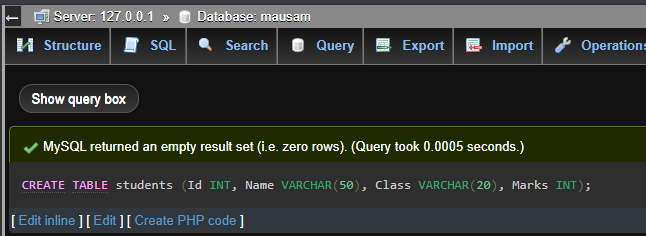
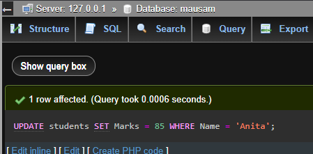
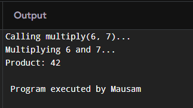
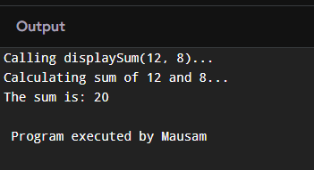

Chapter 1: Database Management System(DBMS)
Data vs Information
Data consists of raw facts and figures that by themselves do not carry meaning. These can be numbers, text, images, or sounds collected from various sources. Data alone cannot help in decision-making without interpretation. For example, a temperature reading of "30" is data until you know whether it's in Celsius or Fahrenheit, the location, or time.
Information is the processed form of data that is meaningful and useful. It results from organizing, structuring, or presenting data in context. For example, "The temperature in New York on June 15th was 30°C, which is higher than the average" is information because it adds context, making the data valuable for analysis or decisions.
Understanding the distinction is crucial for fields like data science, business intelligence, and database management where the goal is to convert raw data into actionable information.
Features of Information
- Accuracy: Information must be precise and error-free. Inaccurate information can lead to poor decisions or business losses.
- Timeliness: Information must be available when needed. Outdated information might be irrelevant or misleading.
- Relevance: The information should be applicable to the purpose it serves, ensuring it meets the needs of users or processes.
- Completeness: All necessary details should be present for the information to be fully understood and actionable.
- Consistency: Information should be consistent across different sources and over time to build trust and reliability.
- Understandability: Information should be presented clearly and understandably so that users can interpret it correctly.
- Accessibility: Authorized users should be able to easily access the information when needed without unnecessary hurdles.
Database and Its Purpose
A database is a collection of related data organized systematically to facilitate easy access, management, and updating. Databases enable users to store vast amounts of information securely and retrieve it quickly using query languages like SQL.
The primary purpose of a database is to support efficient data storage, retrieval, and manipulation, enabling applications to serve user needs effectively. Databases eliminate redundant data storage, provide data integrity, and support concurrent access by multiple users, which is essential in modern multi-user environments such as banking, e-commerce, and social networking.
For example, in an online store, a database maintains records of products, customers, orders, and payments, allowing seamless operations like searching products, placing orders, and tracking shipments.
Terminologies in Database
- Table: The basic unit of data storage in relational databases. Each table contains rows (records) and columns (fields), representing entities such as employees or products.
- Field: A column in a table, defining the data type and meaning of the data stored. For example, "Name," "Date of Birth," or "Price."
- Record: A row in a table representing a single entity instance, such as a specific employee or product entry.
- Tuple: Synonymous with a record, emphasizing its ordered structure in a table.
- Object: In object-oriented or object-relational databases, an object is a data entity encapsulating attributes and behaviors, representing real-world entities more naturally.
- Keys: Fields that uniquely identify records or establish relationships:
- Primary Key: A unique identifier for each record in a table (e.g., employee ID).
- Foreign Key: A field in one table that links to the primary key in another, establishing relational connections.
Data Dictionary
The data dictionary is an essential metadata repository in a database system that stores definitions, constraints, and structural information about data elements and their relationships. It acts as a blueprint, documenting the design and structure of the database to aid developers, DBAs, and users in understanding and managing the data.
It typically includes:
- Table names and descriptions
- Field names, data types, and allowed values
- Relationships and constraints between tables
- Access permissions and user roles
An accurate data dictionary is crucial for maintaining data integrity, consistency, and facilitating changes or upgrades in the database structure over time.
Database Management System (DBMS)
Introduction
A DBMS is a sophisticated software system that provides an interface to define, create, query, update, and administer databases. It abstracts the complexity of data storage and management from users, enabling efficient handling of large data volumes and concurrent multi-user access.
Popular DBMS examples include MySQL, Oracle, Microsoft SQL Server, and PostgreSQL, widely used in enterprise and web applications.
Objectives
- Provide a convenient and efficient environment for users to store and retrieve data.
- Ensure data integrity, security, and privacy.
- Enable concurrent multi-user access with transaction management.
- Provide backup, recovery, and fault tolerance mechanisms.
- Maintain data independence by separating physical and logical data structures.
Advantages
- Data Integrity: DBMS enforces rules to maintain accuracy and consistency of data.
- Security: Access controls restrict unauthorized data access and manipulation.
- Reduced Redundancy: Data normalization eliminates duplication, saving storage and improving consistency.
- Backup and Recovery: DBMS automates data backup and recovery, minimizing data loss risks.
- Multi-User Access: Supports concurrent access while preventing conflicts through locking and transactions.
Disadvantages
- Complexity: Setting up and managing a DBMS requires skilled personnel and planning.
- Cost: Licensing, hardware, and maintenance can be expensive.
- Performance Overhead: Additional layers of abstraction may impact speed compared to file-based systems.
- Single Point of Failure: Centralized DBMS can cause system-wide downtime if not designed with fault tolerance.
Types of Database Models
- Hierarchical Model:
Organizes data in a tree-like structure with parent-child relationships, where each child record has only one parent. This model is efficient for representing structured data like organizational charts, XML data, or file systems. However, its rigid hierarchy limits flexibility in representing complex relationships.
- Network Model:
Extends the hierarchical model by allowing multiple parent records, forming a graph structure. This many-to-many relationship model supports more complex real-world scenarios such as supply chains or telecommunications. Though flexible, network models are complex to design and manage.
- Relational Model:
The most widely used model today, it stores data in tables (relations) with rows and columns. Data relationships are established using keys, and operations are performed using relational algebra and SQL. This model offers simplicity, data independence, and flexibility, making it suitable for most business applications.
- Entity-Relationship Model:
Primarily used for database design, this conceptual model uses diagrams (ER diagrams) to illustrate entities, attributes, and relationships. It helps in visualizing and planning the database structure before implementation.
Integrity Constraints and Types
Integrity constraints enforce rules on data to ensure accuracy, consistency, and reliability in a database.
- Domain Constraint: Defines the permissible set of values for a column, such as data type restrictions, value ranges, or formats (e.g., a date field must be a valid date).
- Entity Integrity: Ensures that each table’s primary key is unique and not null, so every record is uniquely identifiable.
- Referential Integrity: Maintains valid relationships between tables by ensuring foreign keys correspond to existing primary keys. It prevents orphan records and maintains relational consistency.
- Key Constraints: Enforce uniqueness and correct usage of primary and foreign keys to maintain data consistency.
Normalization
Introduction
Normalization is a systematic approach of decomposing tables to minimize data redundancy and eliminate undesirable characteristics like update, insert, and delete anomalies. It improves data integrity and efficiency in relational databases by organizing data into multiple related tables.
Normalization follows several stages called normal forms, each with specific rules:
Normal Forms
- First Normal Form (1NF): Ensures that all table columns contain atomic, indivisible values, and there are no repeating groups or arrays within rows.
- Second Normal Form (2NF): Achieved when the table is in 1NF and all non-key attributes are fully functionally dependent on the entire primary key, removing partial dependencies.
- Third Normal Form (3NF): Reached when the table is in 2NF and all attributes are only dependent on the primary key, eliminating transitive dependencies.
Advantages of Normalization
- Eliminates redundant data, reducing storage needs.
- Ensures data consistency and accuracy.
- Makes the database easier to maintain and update.
- Improves query performance by structuring data efficiently.
Disadvantages of Normalization
- Increased number of tables can make queries more complex and slower due to joins.
- Over-normalization may result in performance bottlenecks.
- Sometimes denormalization is preferred for read-heavy applications to improve speed.
Centralized and Distributed Database
Introduction
Centralized Database systems store data in a single central location managed by one DBMS instance. All data access, processing, and administration occur on this central server.
Distributed Database systems distribute data across multiple physical locations, connected through a network but appear as a single database to users. This approach can enhance performance, fault tolerance, and scalability.
Advantages
- Centralized: Easier management, simplified backup, and strong data integrity due to centralized control.
- Distributed: Improved reliability (no single point of failure), better performance by localizing data access, and scalability by adding nodes.
Disadvantages
- Centralized: Potential bottlenecks and vulnerability to single points of failure.
- Distributed: Complex data synchronization, possible consistency issues, and higher maintenance costs.
Comparison
Feature Centralized Database Distributed Database Data Location Stored in one place Spread across multiple locations Management Complexity Simple Complex Fault Tolerance Low (single point of failure) High (redundant nodes) Performance Limited by server capability Potentially higher through parallelism Cost Lower initial cost Higher infrastructure and maintenance costs Database Security
Introduction
Database security involves protecting the database against unauthorized access, misuse, or theft. It is critical because databases often store sensitive information such as personal data, financial records, and proprietary business information.
Challenges
- Preventing unauthorized access from hackers or malicious insiders.
- Protecting against SQL injection and other cyber attacks.
- Maintaining privacy and compliance with regulations such as GDPR or HIPAA.
- Ensuring data availability despite threats like denial of service attacks.
Security Measures
- Authentication: Verifying user identities through passwords, biometrics, or tokens.
- Authorization: Granting appropriate access rights based on user roles.
- Encryption: Protecting data at rest and in transit using cryptographic techniques.
- Auditing: Keeping logs of access and modifications for accountability.
- Backup and Recovery: Regularly backing up data to recover from security breaches or data loss.
Roles of DBA (Database Administrator)
The DBA plays a crucial role in managing database security, performance, and availability. Key responsibilities include:
- Installing and configuring the DBMS software.
- Defining and enforcing security policies.
- Performing backup and recovery operations.
- Monitoring system performance and tuning databases.
- Managing user accounts, roles, and privileges.
- Ensuring data integrity and compliance with regulations.
Practical Topics: DDL and DML Languages
Data Definition Language (DDL) commands are used to define and modify database structures such as tables, indexes, and schemas. Common DDL commands include
CREATE,ALTER, andDROP.Data Manipulation Language (DML) commands are used to manipulate data stored within tables. These include
INSERT,UPDATE,DELETE, andSELECT.SQL Data Types
SQL supports various data types to define the nature and constraints of data stored in table fields:
- CHAR(size): Fixed-length character string. Useful for storing data with a fixed size, such as country codes.
- VARCHAR(size): Variable-length character string. Efficient for storing text with varying lengths, like names or emails.
- BINARY(size): Fixed-length binary data, used to store raw bytes.
- VARBINARY(size): Variable-length binary data.
- TINYBLOB: Very small binary large object (up to 255 bytes).
- TINYTEXT: Very small text data.
- TEXT: Large text data (up to 65,535 characters).
- LONGTEXT: Very large text data (up to 4GB).
- ENUM: A string object that can have one value chosen from a list of predefined values.
- BIT: Stores bit-field values.
- TINYINT: Very small integer (usually 1 byte).
- BOOLEAN: Stores true or false values (often implemented as TINYINT).
- INTEGER: Standard integer value.
- FLOAT: Floating-point number with single precision.
- DOUBLE: Floating-point number with double precision.
- DECIMAL(p,s): Fixed-point number with precision p and scale s, suitable for financial calculations.
- DATE: Stores calendar dates (year, month, day).
- DATETIME: Stores date and time values.
DBMS Questions and Answers (2020-2024)
- What is Database and DBMS? List out the advantages and disadvantages of DBMS.
A database is an organized collection of data. DBMS (Database Management System) is software that manages databases.
Advantages: Reduces data redundancy, ensures data integrity, supports multi-user access, enables backup and recovery.
Disadvantages: Expensive hardware/software, complex to manage, requires skilled personnel.- Differentiate between file processing system and DBMS:
1. File system has data redundancy; DBMS reduces it.
2. File system is application-dependent; DBMS is independent.
3. File system has limited security; DBMS has better security.
4. File system lacks backup/recovery; DBMS supports both.- Explain different models of DBMS with advantages and disadvantages:
- Hierarchical: Tree-like structure. Fast access but rigid.
- Network: Many-to-many relations. Flexible but complex.
- Relational: Uses tables. Easy to use and scalable but slower for complex data.
- Object-Oriented: Supports objects. Good for complex apps but less mature.- What is a relational database? How is it different?
A relational database stores data in tables with rows and columns. It's different due to its use of primary/foreign keys and structured query language (SQL).- What is data redundancy? How does DBMS help in reducing it?
Data redundancy is the duplication of data. DBMS reduces it by using normalization and shared access to a central database.- Differentiate between centralized and distributed database systems:
- Centralized: Data stored in one location. Easier to manage but less fault-tolerant.
- Distributed: Data distributed over multiple locations. More reliable but complex.- Who is DBA? Responsibilities?
DBA (Database Administrator) manages and maintains the database.
Responsibilities: Installation, configuration, backup, recovery, security, performance tuning.- Define normalization. Explain 1NF, 2NF, 3NF:
Normalization is the process of organizing data to reduce redundancy.
- 1NF: No repeating groups. Example: Separate multiple phone numbers into rows.
- 2NF: Remove partial dependencies. Every non-key attribute depends on whole primary key.
- 3NF: Remove transitive dependencies. Non-key attributes should not depend on other non-key attributes.- Explain primary key, foreign key, candidate key:
- Primary key: Unique identifier (e.g., StudentID).
- Foreign key: Refers to primary key in another table.
- Candidate key: All possible keys that can become primary.- What is SQL? Explain components and functions:
SQL (Structured Query Language) is used to interact with databases.
- Components: DDL, DML, DCL, TCL.
- Functions: SELECT, INSERT, UPDATE, DELETE, JOINs, etc.- SQL commands:
CREATE TABLE students (Id INT, Name VARCHAR(50), Class VARCHAR(20), Marks INT);
INSERT INTO students (Id, Name, Class, Marks) VALUES (1, 'Anita', '10A', 78), (2, 'Ramesh', '10B', 82), (3, 'Sita', '10A', 90), (4, 'John', '10C', 69);SELECT * FROM students;UPDATE students SET Marks = 85 WHERE Name = 'Anita';
DELETE FROM students WHERE Id = 3;- Define the following terms:
- Data Dictionary: Metadata about database structure.
- Primary Key: Unique column identifying a record.
- Relationship: Association between tables using keys.
- DML: Data Manipulation Language (e.g., SELECT, INSERT).
- SQL: Language to manage and query databases.
- Data Integrity: Accuracy and consistency of data.
- DDL: Data Definition Language (e.g., CREATE, ALTER).
- Data Security: Protecting data from unauthorized access.
- Database System: The database + DBMS software + users + applications.
Chapter 2: Programming In C
1. Working with a Function
a. Define Function
A function is a block of code that performs a specific task, can be called multiple times, and can return a value.
b. Syntax of Functions
return_type function_name(parameters) { // code to execute }c. Types of Functions
- Library Functions (e.g.,
printf(),scanf())- User-Defined Functions (custom created by the programmer)
d. Components of Function
Categories of function with example:
- Function Prototype: Declaration before main function
- Function Call: Invoking the function
- Function Definition: Body of the function
- Return Type: Type of value returned by the function
- Function with return type but no arguments:
#include <stdio.h> int getValue() { int value = 42; printf("Inside getValue function...\n"); return value; } int main() { printf("Calling getValue()...\n"); int result = getValue(); printf("The value is: %d\n", result); return 0; }- Function with return type with arguments:
#include <stdio.h> int multiply(int a, int b) { printf("Multiplying %d and %d...\n", a, b); int product = a * b; return product; } int main() { int x = 6, y = 7; printf("Calling multiply(%d, %d)...\n", x, y); int result = multiply(x, y); printf("Product: %d\n", result); return 0; }- Function with no return type with no arguments:
#include <stdio.h> void greet() { printf("Welcome to C Programming!\n"); printf("This is a simple greeting message.\n"); } int main() { printf("Calling greet()...\n"); greet(); printf("greet() function executed.\n"); return 0; }- Function with no return type with arguments:
#include <stdio.h> void displaySum(int x, int y) { int sum = x + y; printf("Calculating sum of %d and %d...\n", x, y); printf("The sum is: %d\n", sum); } int main() { int a = 12, b = 8; printf("Calling displaySum(%d, %d)...\n", a, b); displaySum(a, b); return 0; }Storage Classes in C
Storage classes in C define the scope (visibility), lifetime (existence), and default initial value of variables. There are four main types of storage classes:
1. Automatic (
auto)This is the default storage class for local variables declared inside a function. These variables are created when the function is called and destroyed when the function exits. They are not accessible outside the function.
Example:
#include <stdio.h> void showAuto() { auto int x = 10; printf("Auto variable: %d\n", x); } int main() { showAuto(); return 0; }2. External (
extern)The
externstorage class is used to declare a global variable or function that is defined in another file or later in the same file. It is useful for accessing global variables across multiple files.Example:
// File1.c #include <stdio.h> int count = 10; // Global variable void display() { printf("Count = %d\n", count); } // File2.c extern int count; int main() { count++; display(); return 0; }Note: Requires two separate files to demonstrate fully. For single-file demo:
#include <stdio.h> int count = 5; // Global variable void display(); int main() { extern int count; count++; display(); return 0; } void display() { printf("Extern variable count = %d\n", count); }3. Register (
register)Variables declared with
registersuggest to the compiler to store them in the CPU registers instead of RAM for faster access. It is commonly used for frequently accessed variables like loop counters. You cannot access the address of register variables using the&operator.Example:
#include <stdio.h> int main() { register int i; for(i = 0; i < 5; i++) { printf("Register variable i = %d\n", i); } return 0; }4. Static (
static)The
staticstorage class retains the value of a variable between function calls. A static variable inside a function keeps its value across invocations. A static global variable or function is limited to the file scope (not visible in other files).Example 1: Static variable in a function
#include <stdio.h> void counter() { static int count = 0; // Initialized once count++; printf("Static count = %d\n", count); } int main() { counter(); counter(); counter(); return 0; }Example 2: Static global variable (not accessible in other files)
static int globalCount = 0; void add() { globalCount++; }4. Recursive Function
A function that calls itself until a base condition is met.
int factorial(int n) { if(n == 0) return 1; else return n * factorial(n - 1); }5. Passing Array to a Function
void printArray(int arr[], int size) { for(int i = 0; i < size; i++) { printf("%d ", arr[i]); } }Call from
main():int main() { int numbers[] = {1, 2, 3, 4, 5}; printArray(numbers, 5); return 0; }#include <stdio.h> void doubleElements(int arr[], int size) { for(int i = 0; i < size; i++) { arr[i] *= 2; } } int main() { int data[] = {10, 20, 30}; doubleElements(data, 3); for(int i = 0; i < 3; i++) { printf("%d ", data[i]); } return 0; }Passing a 2D Array
#include <stdio.h> void printMatrix(int mat[2][3]) { for(int i = 0; i < 2; i++) { for(int j = 0; j < 3; j++) { printf("%d ", mat[i][j]); } printf("\n"); } } int main() { int matrix[2][3] = {{1, 2, 3}, {4, 5, 6}}; printMatrix(matrix); return 0; }Finding Maximum in Array
#include <stdio.h> int findMax(int arr[], int size) { int max = arr[0]; for(int i = 1; i < size; i++) { if(arr[i] > max) max = arr[i]; } return max; }Past Year Questions of Functions (2020-2024 and Model Questions)